公开地标对应与V2候选 自动匹配残差仅代理，不是确认地理精度。橙色CityRefer；青色OSM城市提议反投影。中文报告 · 逐场景
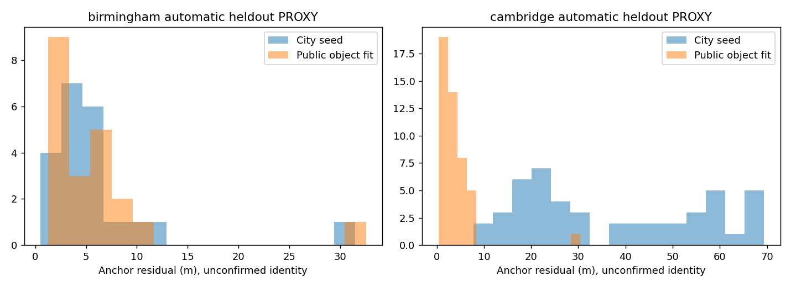
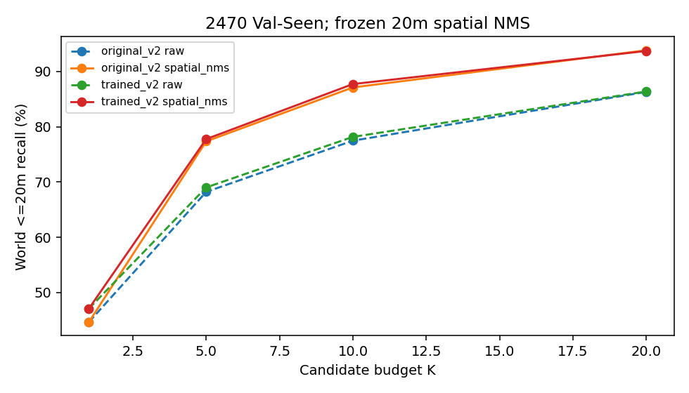
名称/场景筛选
birmingham_block_4 / NT Wholesale Cash & Carry 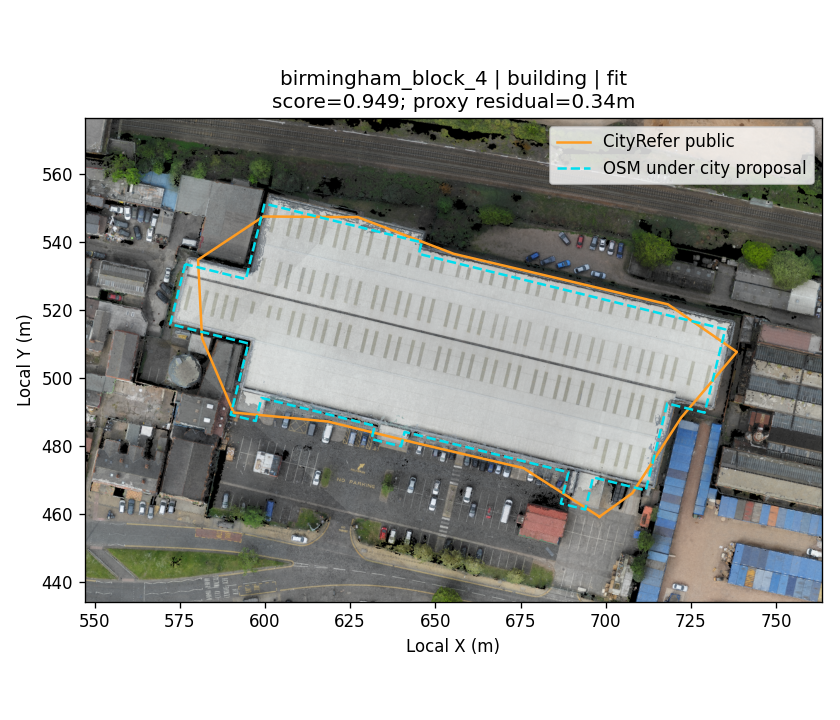
{"match_id": "368ae4c7f072de10be9b", "name": "NT Wholesale Cash & Carry", "map": "birmingham_block_4", "image": "cases/368ae4c7f072de10be9b.png", "split": "fit", "score": 0.949361430489906, "residual": 0.34260771607247353, "reasons": []}
birmingham_block_1 / St. Teresa of the Child Jesus Catholic Church 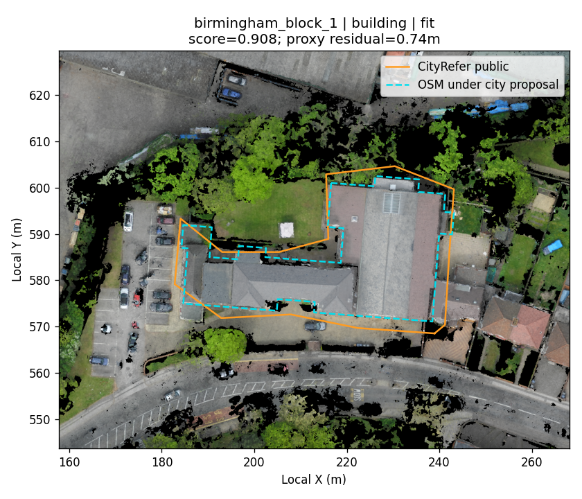
{"match_id": "e529c891edbb39b5e3b4", "name": "St. Teresa of the Child Jesus Catholic Church", "map": "birmingham_block_1", "image": "cases/e529c891edbb39b5e3b4.png", "split": "fit", "score": 0.9078488508177452, "residual": 0.7422380666505934, "reasons": []}
birmingham_block_5 / regina drive & walsall road 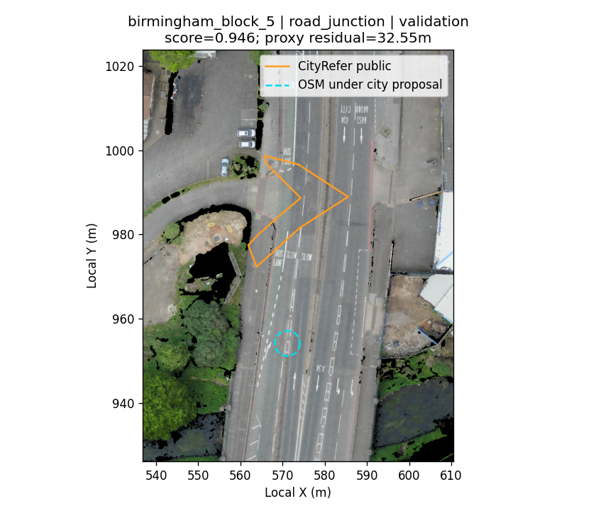
{"match_id": "95e2e94d4644b428fa3c", "name": "regina drive & walsall road", "map": "birmingham_block_5", "image": "cases/95e2e94d4644b428fa3c.png", "split": "validation", "score": 0.9455203299942698, "residual": 32.55207039816998, "reasons": []}
birmingham_block_3 / birchfield road & livingstone road 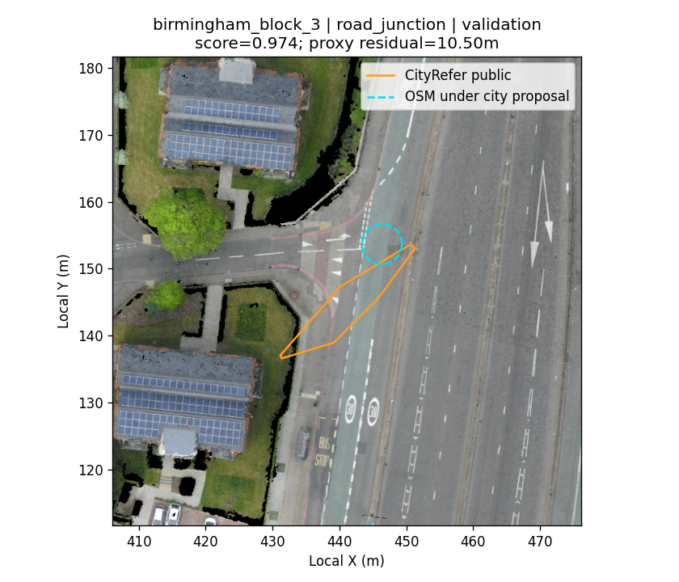
{"match_id": "9ac0452ff012e3752149", "name": "birchfield road & livingstone road", "map": "birmingham_block_3", "image": "cases/9ac0452ff012e3752149.png", "split": "validation", "score": 0.974084671778707, "residual": 10.50073213389036, "reasons": []}
birmingham_block_4 / aldridge road & birchfield road 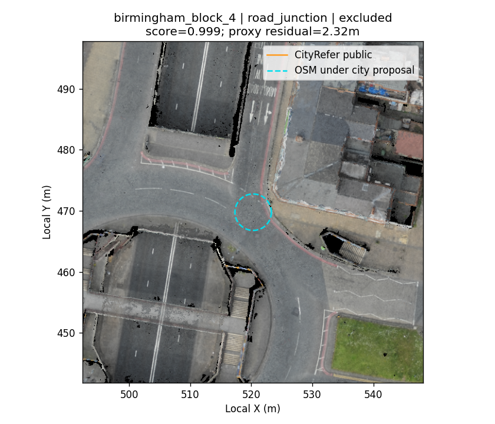
{"match_id": "0df2998bf5783734b526", "name": "aldridge road & birchfield road", "map": "birmingham_block_4", "image": "cases/0df2998bf5783734b526.png", "split": "excluded", "score": 0.9992483347647346, "residual": 2.320720113219304, "reasons": ["ambiguous_road_junction"]}
birmingham_block_1 / grosvenor road & wellington road 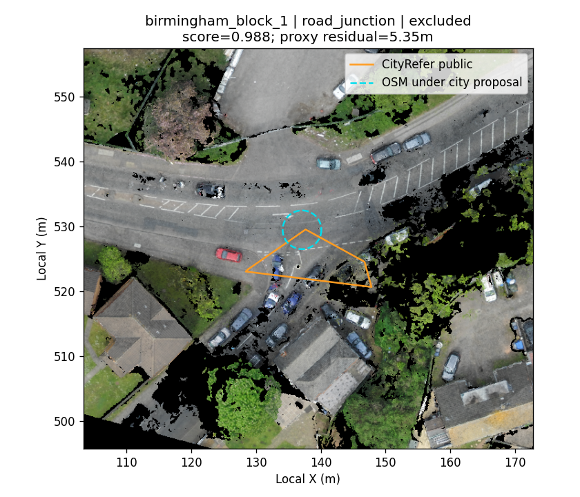
{"match_id": "b4d230ea2254e50b629c", "name": "grosvenor road & wellington road", "map": "birmingham_block_1", "image": "cases/b4d230ea2254e50b629c.png", "split": "excluded", "score": 0.9875567725281766, "residual": 5.348172814702553, "reasons": ["ambiguous_road_junction"]}
birmingham_block_0 / ashcroft grove & graham warren way 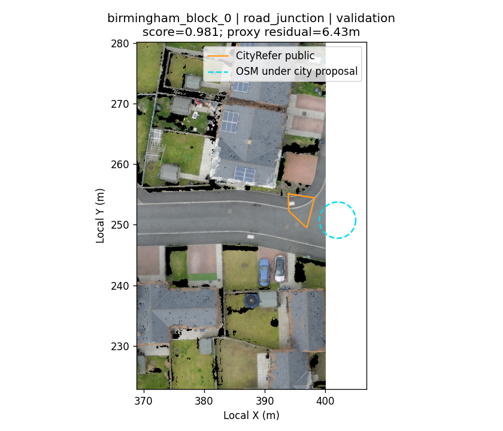
{"match_id": "47babf093a93e77d4111", "name": "ashcroft grove & graham warren way", "map": "birmingham_block_0", "image": "cases/47babf093a93e77d4111.png", "split": "validation", "score": 0.9806582921762028, "residual": 6.426847641613456, "reasons": []}
birmingham_block_0 / bridgelands way & livingstone road 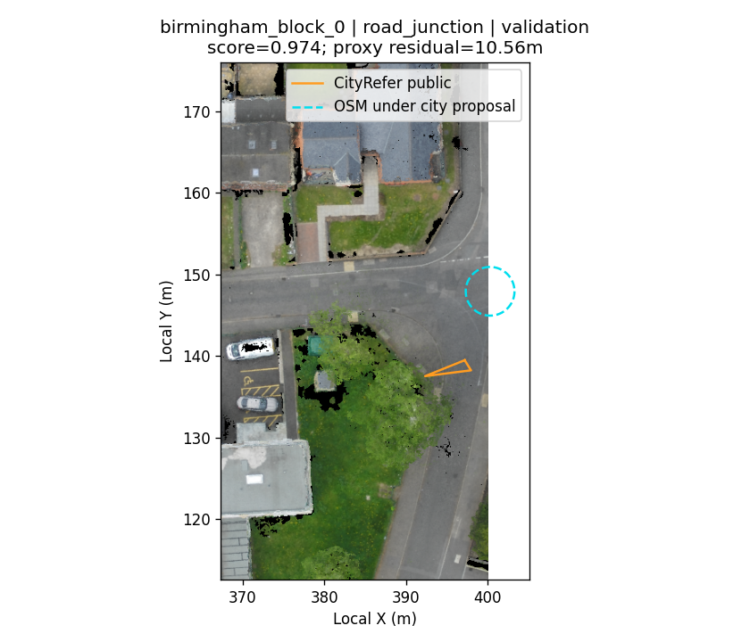
{"match_id": "d388d003ea7610a5ec1f", "name": "bridgelands way & livingstone road", "map": "birmingham_block_0", "image": "cases/d388d003ea7610a5ec1f.png", "split": "validation", "score": 0.9743164899030158, "residual": 10.560206306263693, "reasons": []}
cambridge_block_8 / Spalding Hostel (King's College) 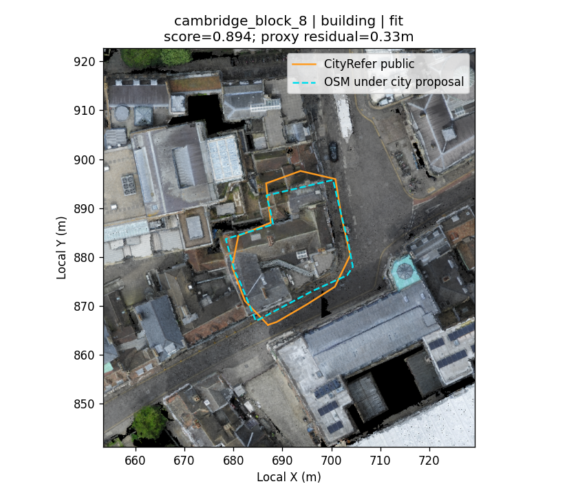
{"match_id": "15efc3830f70d8d3ff34", "name": "Spalding Hostel (King's College)", "map": "cambridge_block_8", "image": "cases/15efc3830f70d8d3ff34.png", "split": "fit", "score": 0.8943860458169576, "residual": 0.3319169357742185, "reasons": []}
cambridge_block_7 / Essex Building 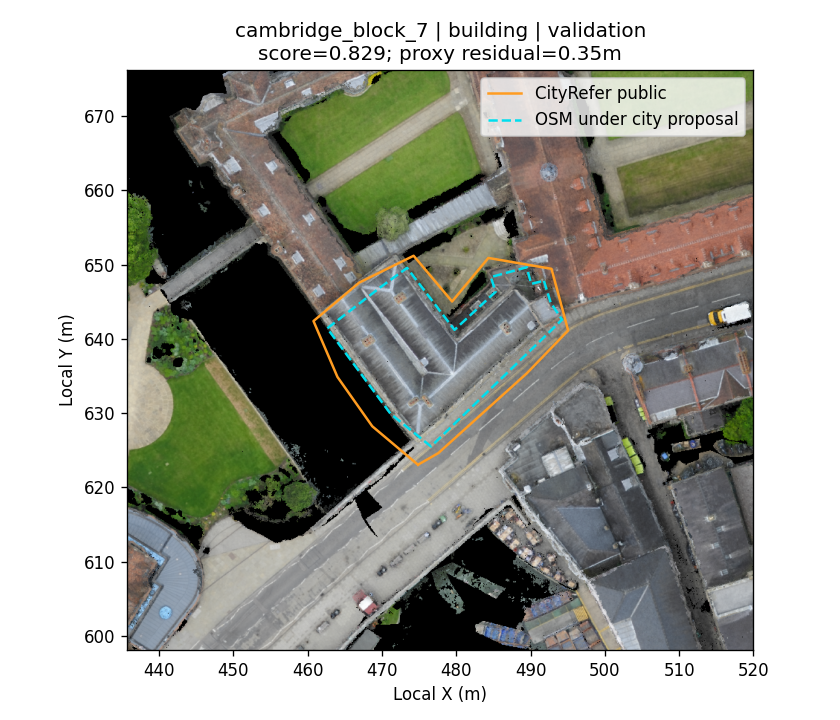
{"match_id": "c8a429e728fe8a1ec37f", "name": "Essex Building", "map": "cambridge_block_7", "image": "cases/c8a429e728fe8a1ec37f.png", "split": "validation", "score": 0.8288839728659614, "residual": 0.3458318386701238, "reasons": []}
cambridge_block_10 / 1 Chesterton Lane 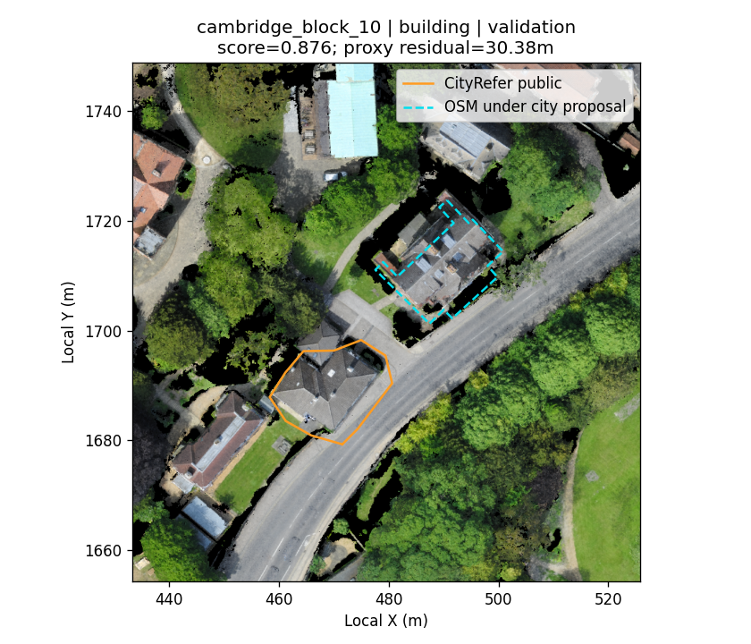
{"match_id": "373016703fbd33023ff5", "name": "1 Chesterton Lane", "map": "cambridge_block_10", "image": "cases/373016703fbd33023ff5.png", "split": "validation", "score": 0.8764787307292228, "residual": 30.37835963353619, "reasons": []}
cambridge_block_17 / croftholme lane & victoria road 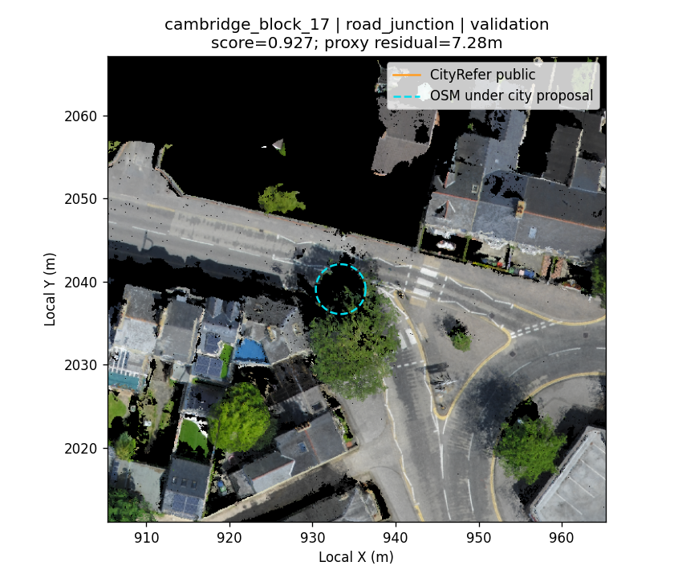
{"match_id": "699acf531689a93ce08d", "name": "croftholme lane & victoria road", "map": "cambridge_block_17", "image": "cases/699acf531689a93ce08d.png", "split": "validation", "score": 0.9266046253633772, "residual": 7.275306295666421, "reasons": []}
cambridge_block_21 / fair street & maids causeway 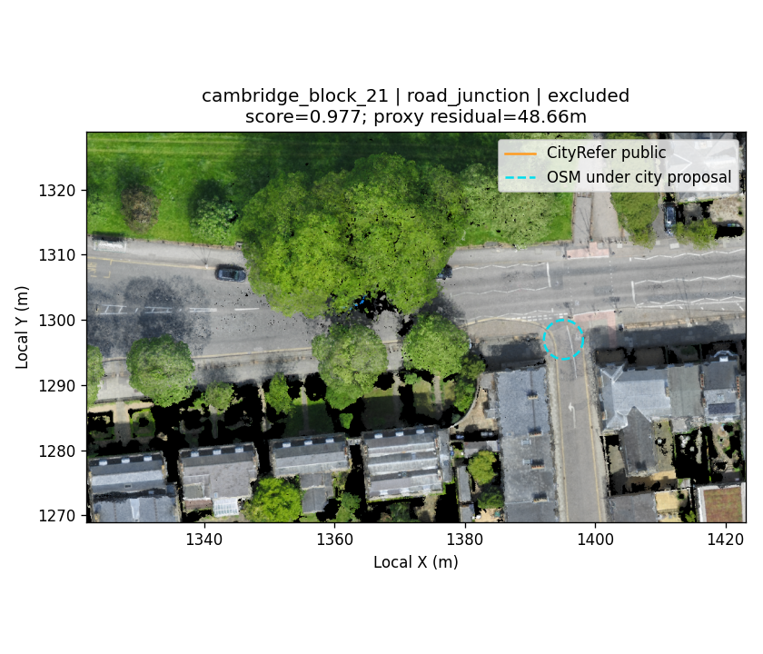
{"match_id": "ba991f68b068e482d6da", "name": "fair street & maids causeway", "map": "cambridge_block_21", "image": "cases/ba991f68b068e482d6da.png", "split": "excluded", "score": 0.9769019754520074, "residual": 48.65512374404352, "reasons": ["ambiguous_road_junction"]}
cambridge_block_8 / senate house hill & st marys street 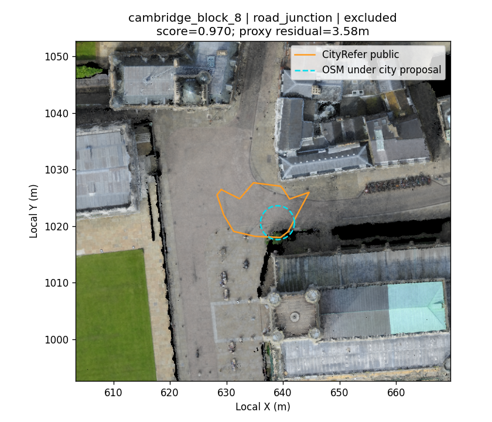
{"match_id": "ee6f219316329e70467c", "name": "senate house hill & st marys street", "map": "cambridge_block_8", "image": "cases/ee6f219316329e70467c.png", "split": "excluded", "score": 0.9700414733896908, "residual": 3.5772654856047637, "reasons": ["ambiguous_road_junction"]}
cambridge_block_10 / alpha road & chesterton road 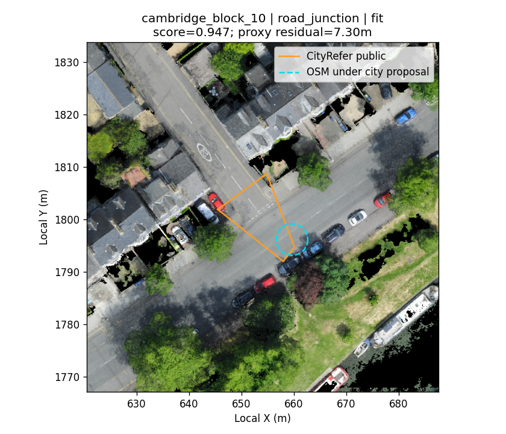
{"match_id": "61e13901d327cc5c30ef", "name": "alpha road & chesterton road", "map": "cambridge_block_10", "image": "cases/61e13901d327cc5c30ef.png", "split": "fit", "score": 0.9470300383954671, "residual": 7.302917093724827, "reasons": []}
cambridge_block_10 / alpha road & east hertford street 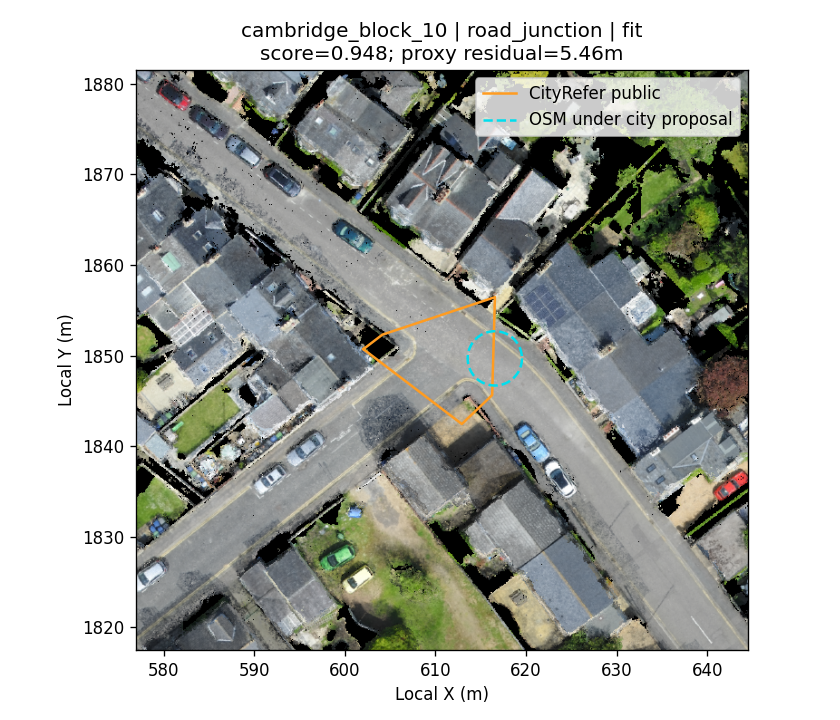
{"match_id": "18c286d80a579b39f08b", "name": "alpha road & east hertford street", "map": "cambridge_block_10", "image": "cases/18c286d80a579b39f08b.png", "split": "fit", "score": 0.9482153721665412, "residual": 5.460124012344904, "reasons": []}
V2 #2 / birmingham_block_1 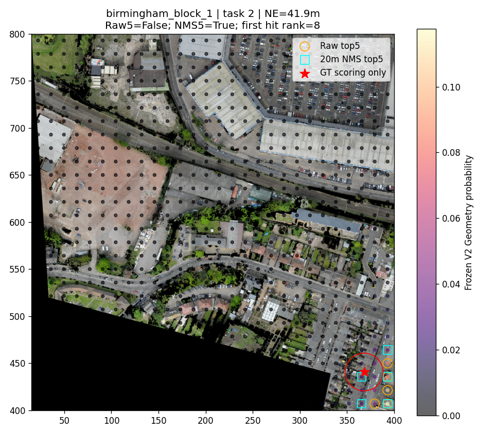
the row of brown houses along Leslie Road, across the street from a gray building.
事后GT仅评分；Raw5=False; NMS5=True; NE=41.89m
V2 #3 / birmingham_block_1 This building is the entire row of houses on Leslie Road. Although it's a terrace it should probably be classed as separate building/s
事后GT仅评分；Raw5=False; NMS5=True; NE=26.61m
V2 #10 / birmingham_block_1 Left side of a white and gray house, with a multi-colored gray and brown roof that has a red car in its driveway facing the corner of Willmore Road and Wellington Road
事后GT仅评分；Raw5=False; NMS5=True; NE=55.02m
V2 #14 / birmingham_block_1 Watch multi-unit building, with six units having a solid gray roofs and the other four units being longer, having multicolored white and gray roofs, that has a parking lot in front of it off Willington Road
事后GT仅评分；Raw5=False; NMS5=False; NE=164.91m
V2 #26 / birmingham_block_1 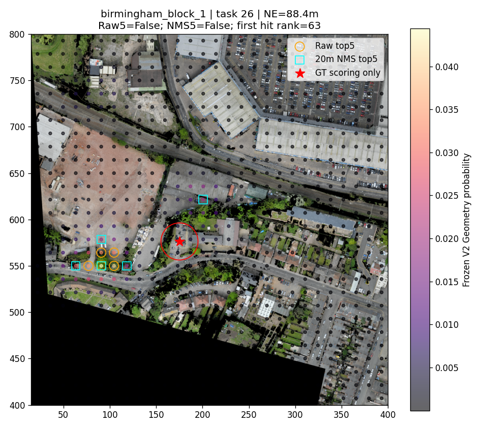
A red car and a black car in front of each other, that is in between a white car with a Blacktop and two black cars, and a parking lot behind the full circle events and exhibitions LTD building off Grosvenor Road
事后GT仅评分；Raw5=False; NMS5=False; NE=88.36m
V2 #1 / birmingham_block_1 The long row of gray houses with cars parked in front of them along Leslie Road.
事后GT仅评分；Raw5=True; NMS5=True; NE=12.31m